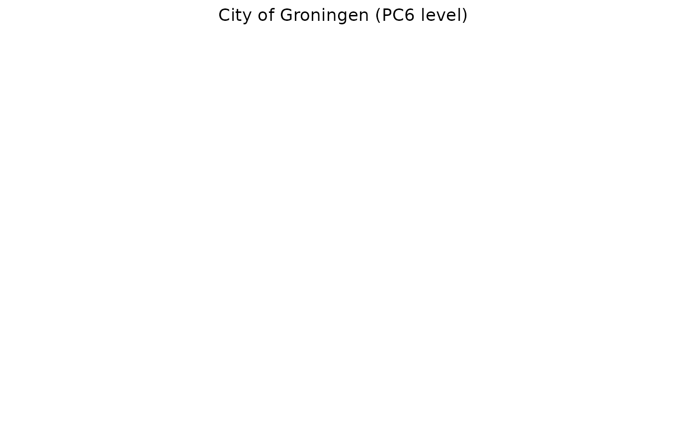
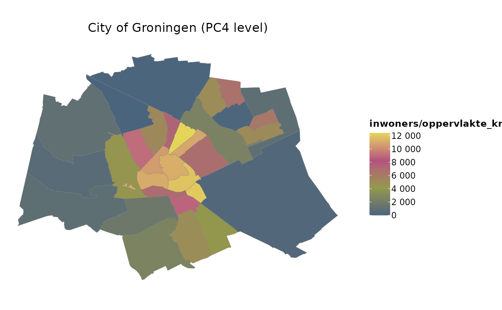

R/data.R
cbs_geodata.RdData Sets with Geometries of Dutch Provinces, Municipalities and Zip Codes
geo_gemeenten
geo_ggdregios
geo_nuts3
geo_postcodes2
geo_postcodes3
geo_postcodes4
geo_postcodes6
geo_provinciesAn object of class sf (inherits from data.frame) with 345 rows and 4 columns.
An object of class sf (inherits from data.frame) with 25 rows and 4 columns.
An object of class sf (inherits from data.frame) with 40 rows and 4 columns.
An object of class sf (inherits from data.frame) with 90 rows and 4 columns.
An object of class sf (inherits from data.frame) with 798 rows and 4 columns.
An object of class sf (inherits from data.frame) with 4068 rows and 4 columns.
An object of class sf (inherits from data.frame) with 58481 rows and 4 columns.
An object of class sf (inherits from data.frame) with 12 rows and 4 columns.
The data in these data.frames are retrieved from, and publicly available at, Statistics Netherlands:
Centraal Bureau voor de Statistiek (CBS), 'Gebiedsindelingen', GPKG 2022 v1, https://www.cbs.nl
Centraal Bureau voor de Statistiek (CBS), 'Kerncijfers per postcode', ZIP 2020 v1, https://www.cbs.nl
These data.frames are of additional class sf and contain 3 variables:
...
name of the area, these are: geo_gemeenten$gemeente, geo_ggdregios$ggdregio, geo_nuts3$nuts3, geo_postcodes2$postcode, geo_postcodes3$postcode, geo_postcodes4$postcode, geo_postcodes6$postcode, geo_provincies$provincie
inwoners
number of inhabitants in the area
oppervlakte_km2
area in square kilometres
geometry
multipolygonal object of the area
All data sets have the coordinate reference system (CRS) set to EPSG:28992 ('RD New'), following the sphere of Earth. They can be flattened to e.g. EPSG:4326 ('WGS 84') using st_transform().
See the repository file to update these data sets.
NOTE: all data sets contains all areas of the whole country of the Netherlands, except for geo_postcodes6 which was cropped to only cover the Certe region (using crop_certe()).
if (require("certeplot2")) {
geo_postcodes6 |>
filter_geolocation(plaats == "Groningen") |>
plot2(category = inwoners / oppervlakte_km2,
datalabels = FALSE,
title = "City of Groningen")
}

if (require("certeplot2")) {
geo_postcodes4 |>
filter_geolocation(plaats == "Groningen") |>
plot2(category = inwoners / oppervlakte_km2,
datalabels = FALSE,
title = "City of Groningen")
}

if (require("sf")) {
head(geo_gemeenten)
}
#> Loading required package: sf
#> Linking to GEOS 3.8.0, GDAL 3.0.4, PROJ 6.3.1; sf_use_s2() is TRUE
#> Simple feature collection with 6 features and 3 fields
#> Geometry type: MULTIPOLYGON
#> Dimension: XY
#> Bounding box: xmin: 73315.68 ymin: 408354.7 xmax: 258967.1 ymax: 587337.6
#> Projected CRS: Amersfoort / RD New
#> gemeente inwoners oppervlakte_km2 geometry
#> 1 's-Gravenhage 548260 85.59080 MULTIPOLYGON (((82600.18 45...
#> 2 's-Hertogenbosch 155485 117.75078 MULTIPOLYGON (((158923.7 41...
#> 3 Aa en Hunze 25405 278.77436 MULTIPOLYGON (((248973.7 56...
#> 4 Aalsmeer 31990 32.32516 MULTIPOLYGON (((113740.1 47...
#> 5 Aalten 27125 97.08071 MULTIPOLYGON (((235537.5 44...
#> 6 Achtkarspelen 28505 104.00588 MULTIPOLYGON (((210504.1 58...